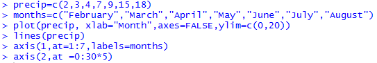
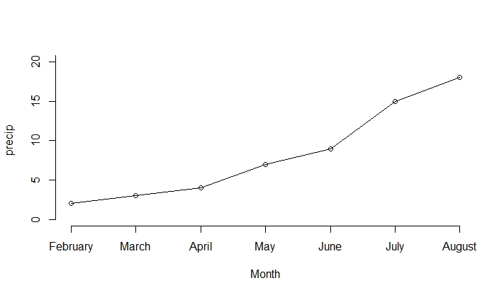

Learning Objective Six: Construct Line charts
Introduction
A Line chart is usually used to investigate the changes over time for one or more groups. A line chart displays information as a series of data points connected by straight line segments. The horizontal axis represents time, and the vertical axis represents the measurements over time.
Knowledge
A line chart is similar to a scatter plot except that the measurements are ordered over time and joined with line segments. A line chart is generated based on a scatter plot in R. After plotting the scatter plot, use the R function
lines (x, type= )
to add line segments. The argument type is a character giving the type of lines desired, in which “p” is for points, “l” for lines, “b” for both lines and points, “c” for empty points joined by lines, “o” for overplotted points and lines, “s” for stair steps, and “h” for histogram like lines.
Key Points to Remember
A line chart shows the measurements through time. The R function is lines(). You may or may not plot the data points using plot() first.
Practice and Reflection
Practice
Example 8: The following data shows the precipitation amount (in inches) from February to August in Minnesota in 2018 (based on National Weather Service). Generate a line graph to show the rain fall amount over time.
| Month | February | March | April | May | June | July | August |
|---|---|---|---|---|---|---|---|
| Precipitation | 2 | 3 | 4 | 7 | 9 | 15 | 18 |
The R code is

The argument “axes=FALSE” in plot is to remove the x- and y-axis labels. The code
“axis(1, at=1:7, labels=months)” is to label the x-axis with the eight months, and the code
“axis (2, at = 0:30*5)” is to label the y-axis with an interval of 5. The line graph is shown in figure 13.

Figure 13. Line graph of precipitation from February to August in Minnesota in 2018.
Or we can use the argument type=”b” in the R function plot().
From the line chart, we observe that the precipitation is increasing through time.
Reflection
Activity 8: The table below shows the number of fatalities of law enforcement officers in the United States (Triola, 2018). Show the trend using a line chart. Where is the maximum point? What happened in that year?
| Year | 1995 | 1996 | 1997 | 1998 | 1999 | 2000 | 2001 | 2002 | 2003 | 2004 | 2005 |
|---|---|---|---|---|---|---|---|---|---|---|---|
| Number of Fatalities | 140 | 170 | 169 | 145 | 158 | 162 | 240 | 161 | 150 | 170 | 165 |
Assessment
The mortality rates (per 1000 births) of new born infants in a country from 2000 to 2010 are shown in the table below. Generate a line chart to show the trend of mortality rate through years.
| 2000 | 2001 | 2002 | 2003 | 2004 | 2005 | 2006 | 2007 | 2008 | 2009 | 2010 |
|---|---|---|---|---|---|---|---|---|---|---|
| 9.5 | 8 | 8.1 | 7.6 | 6.9 | 5.1 | 3.2 | 2.1 | 2.5 | 1.1 | 0.9 |